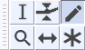

Draw Tool
Draw Tool enables you to redraw the waveform; it can thus be used to make volume changes to individual samples or effect repairs to clicks/noise.
- 
The image above shows the Tools Toolbar with the Draw Tool selected.
- Click on this link to learn more about the Tools Toolbar.
- Click on other tools in the image to learn more about those tools.
When zoomed in close to maximum level, the Draw Tool enables you to adjust the volume level of individual audio samples. The closer the sample is to the horizontal line through the center of the track, the quieter the sample will be.
Draw Tool can be used to eliminate narrow clicks and pops in audio by smoothing out the contour of the samples, so that one sample is not at a very different vertical position to its neighbors.
To use the Draw Tool
- Click above or below a sample to move it to that vertical position. You can keep holding the mouse and drag up or down to move the sample to the exact position required. Dragging left or right moves adjacent samples to the current vertical position of the mouse pointer. If you only want to move one sample, hold down Ctrl before clicking. This ensures that no other samples are affected, even if you drag slightly left or right by accident.
- Smooth the vertical disparity in a group of samples by holding down Alt (or Ctrl + Alt on Linux). This changes the mouse pointer to a brush (or spray can on Linux). Position the pointer halfway along the group of samples then click repeatedly to progressively smooth the group.
Draw Tool only works when using the default Waveform view or Waveform (dB) view (selectable on the Audio Track Dropdown Menu). It does not work in Spectrogram view
| For very short lengths of audio up to 128 samples long, you can smooth out audio automatically with Repair tool under the Effect Menu |